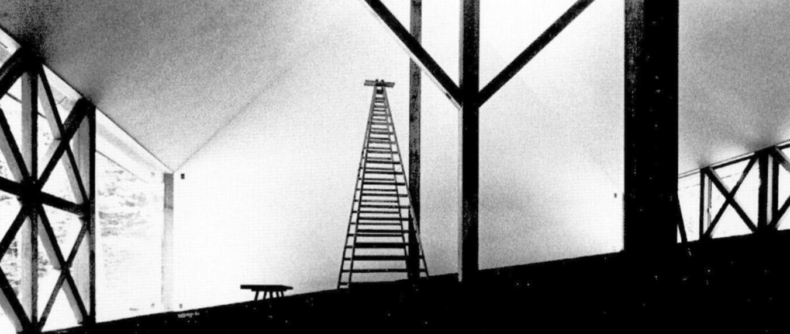
L’assonometria raccoglie in un unico campo ciò che la pianta e la sezione separano. Serve a simulare un sistema spaziale coerente, ancora aperto alla trasformazione. Costruisce un’immagine che non chiude, ma prefigura: restituisce la forma come comportamento, non come oggetto.
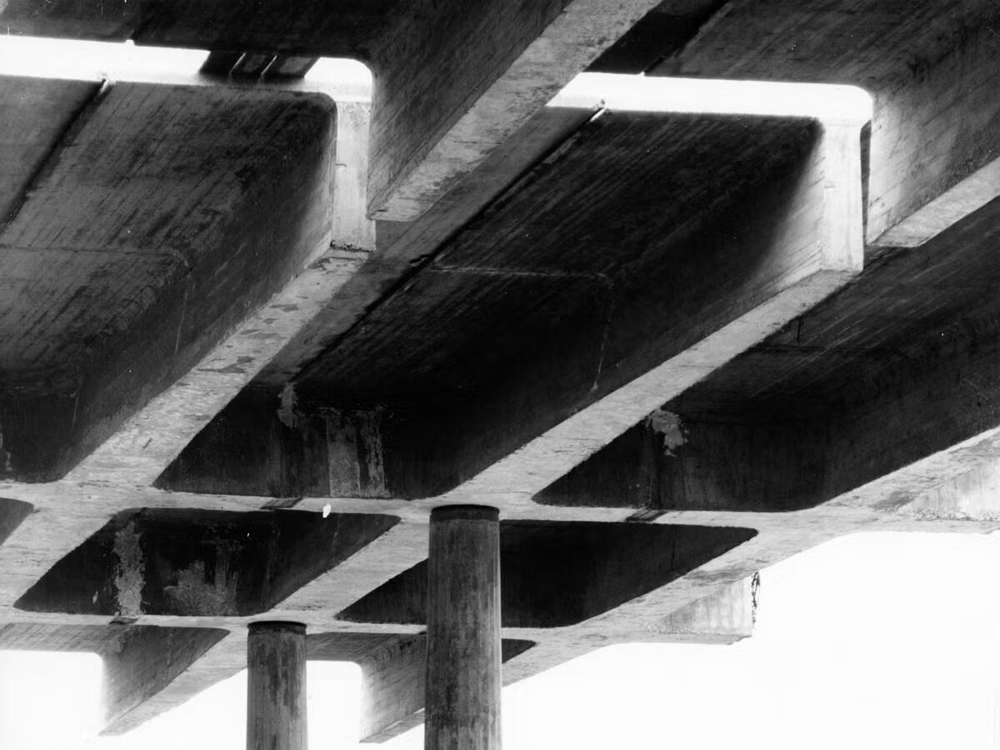
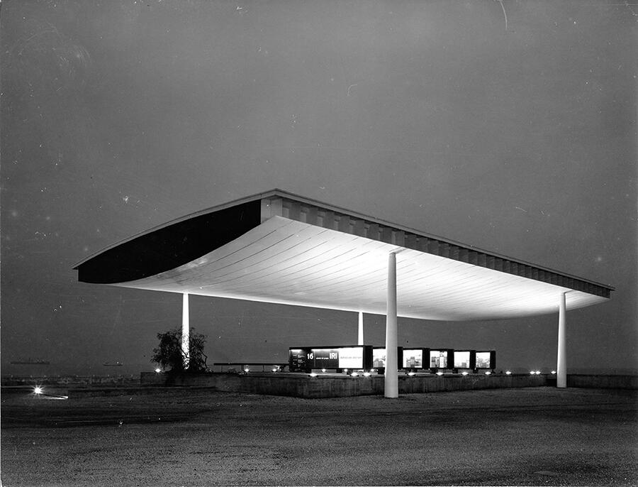
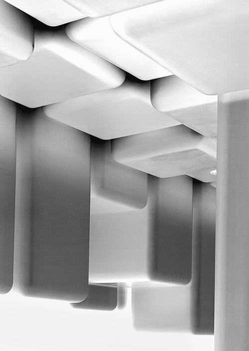
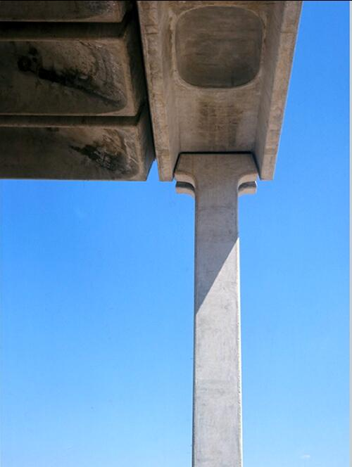
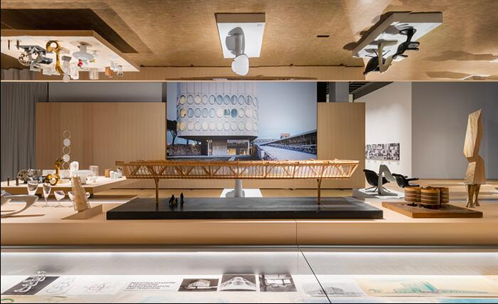
Le strutture a elementi continui di Angelo Mangiarotti rappresentano uno dei momenti più radicali della ricerca italiana sul rapporto tra forma e costruzione. In questo sistema — basato su elementi prefabbricati che si sorreggono per pura azione gravitazionale — la forma non nasce da un’intenzione compositiva, ma da un principio strutturale: gli elementi funzionano solo se la loro geometria è esatta, se il peso si distribuisce correttamente, se le connessioni si verificano nello spazio.
Per questo l’assonometria è lo strumento decisivo. Non un modo per illustrare la struttura, ma il luogo in cui il sistema viene messo alla prova: la continuità del campo, la direzionalità dei carichi, la reciprocità degli incastri devono apparire evidenti, comprensibili, verificabili. L’assonometria mostra ciò che la pianta o la sezione non rivelano: la logica tridimensionale del sistema, la sua capacità di estendersi indefinitamente senza perdere coerenza, la natura “senza gerarchie” della griglia che nasce dalla sola relazionalità tra elementi.
La forza del lavoro di Mangiarotti sta proprio in questa coincidenza totale tra rappresentazione e invenzione: il disegno è già costruzione, perché permette di capire se l’idea regge. La struttura esiste solo nella misura in cui l’assonometria dimostra la fattibilità geometrica del sistema. In questo senso Mangiarotti anticipa una visione dell’architettura come campo strutturale più che come forma compositiva — un sistema in cui l’ordine emerge dalla verifica, non dalla decisione autoriale.
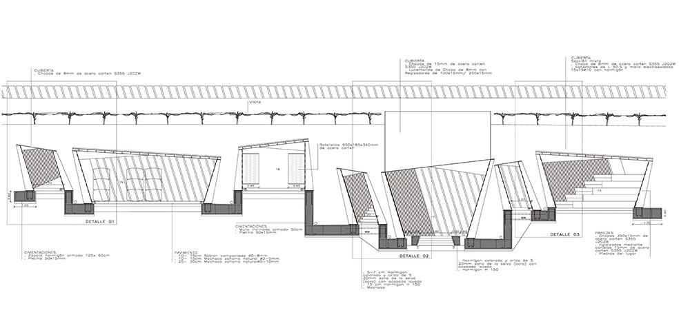
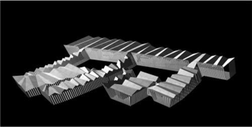
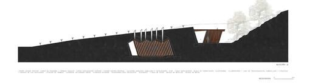
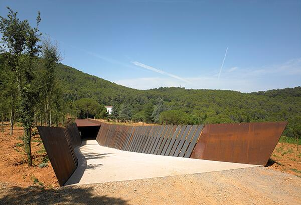
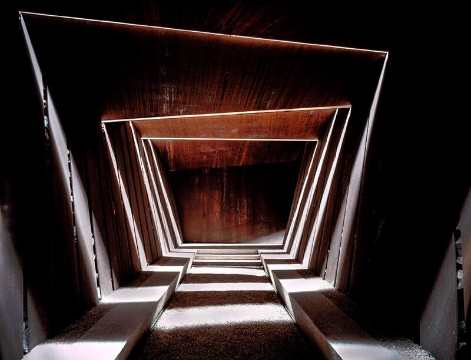
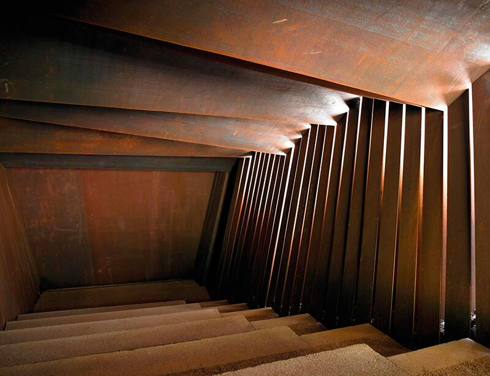
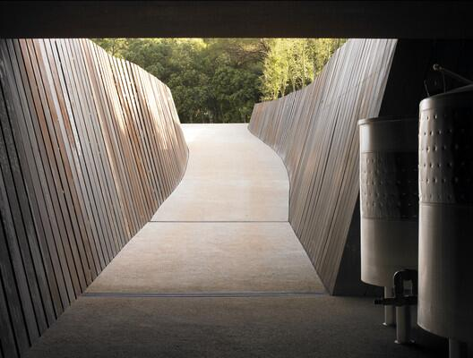
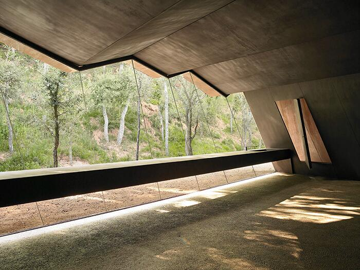
Nel progetto per la Bell-Lloc Winery, RCR Arquitectes definisce l’architettura non come oggetto, ma come sistema di relazioni primarie tra suolo, struttura e luce. L’assonometria diventa il dispositivo ideale per verificare questo sistema: non rappresenta semplicemente le “forme”, ma permette di osservare come le lame di acciaio corten si comportino come un campo strutturale che attraversa il terreno, lo incide e lo sostiene.
La cantina è concepita come una fenditura nel paesaggio: una sequenza di setti paralleli, regolari nella distanza ma irregolari nella loro deformazione, che produce un ambiente in cui la luce filtra da tagli calibrati e il percorso si inscrive come movimento compresso e liberato. L’assonometria rivela precisamente questo comportamento: come le travi si pieghino, si infittiscano o si diradino in risposta alla topografia, e come lo spazio emerga dalla relazione dinamica tra struttura e suolo.
In questo senso Bell-Lloc è un caso esemplare: dimostra che la verifica assonometrica non serve a “mostrare” l’edificio, ma a rendere leggibile la logica che lo genera. La forma non è un volume chiuso, ma un campo di forze che prende coerenza solo quando viene osservato nella sua continuità tridimensionale. L’assonometria permette di cogliere questa continuità, mostrando come la cantina sia al tempo stesso architettura, infrastruttura e paesaggio.
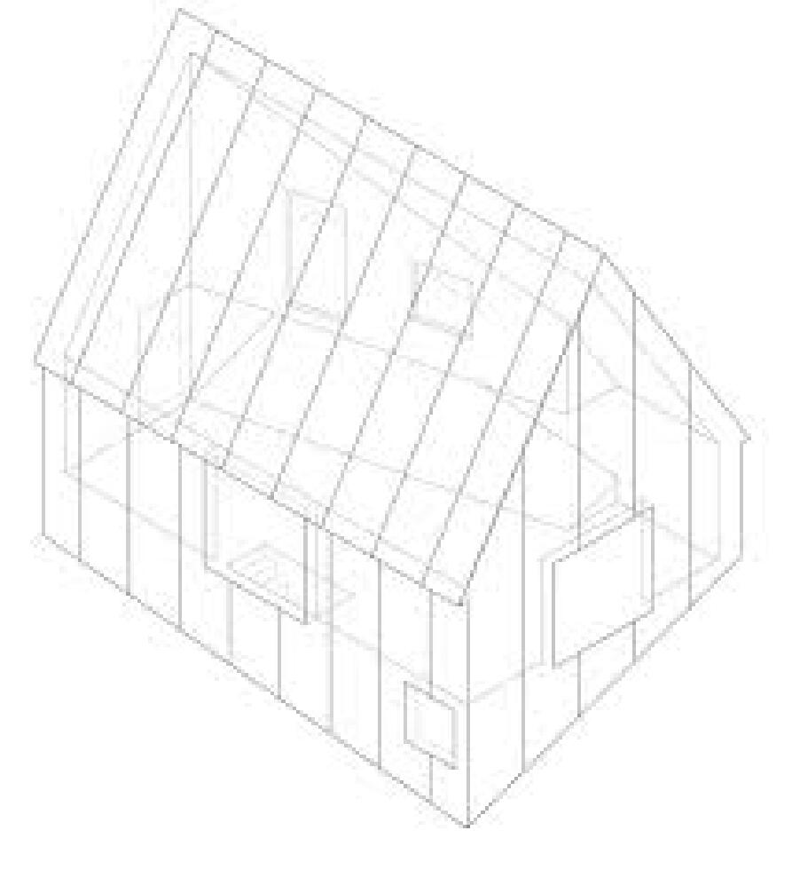
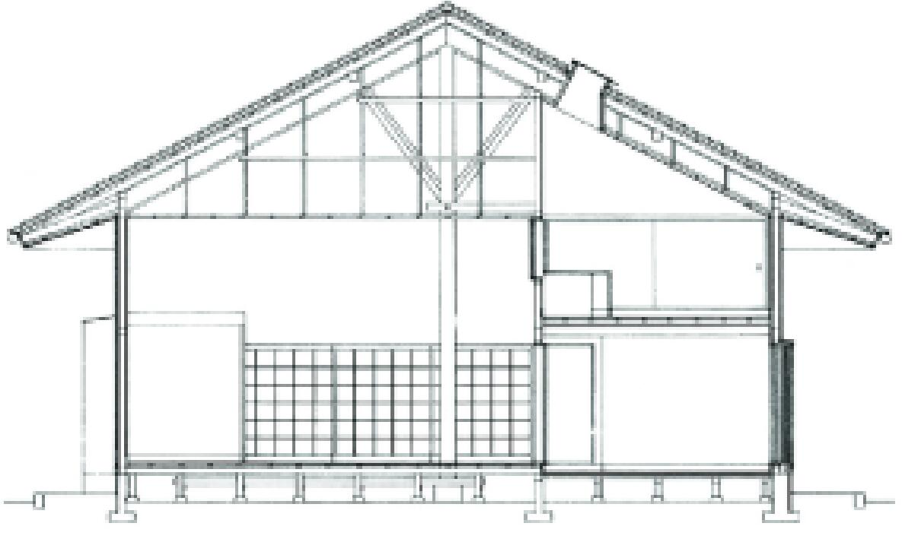
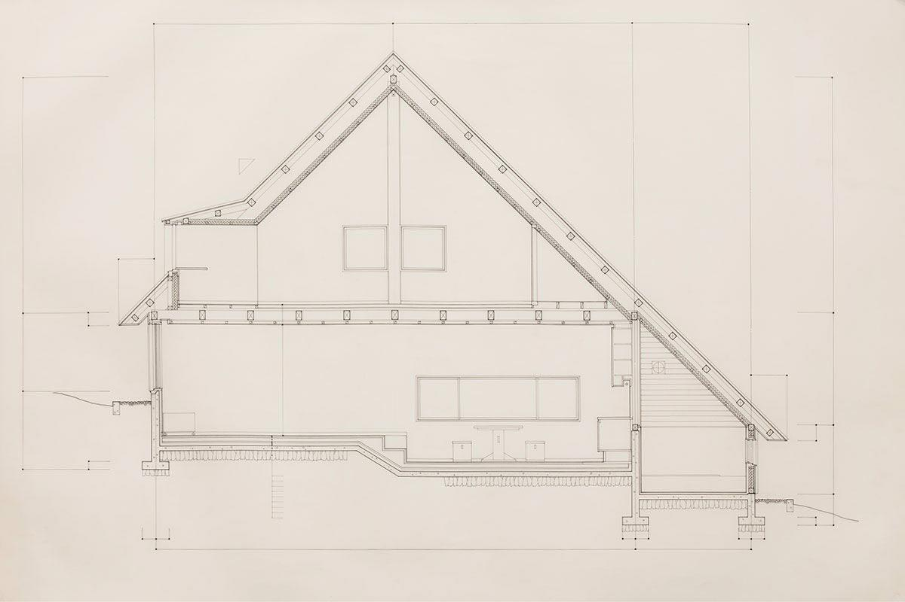
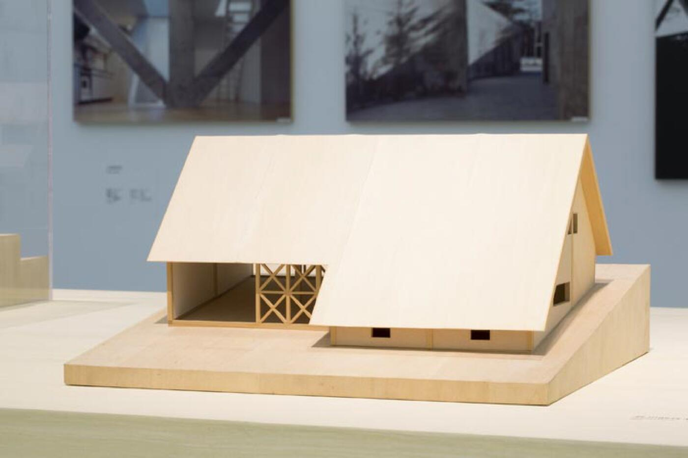
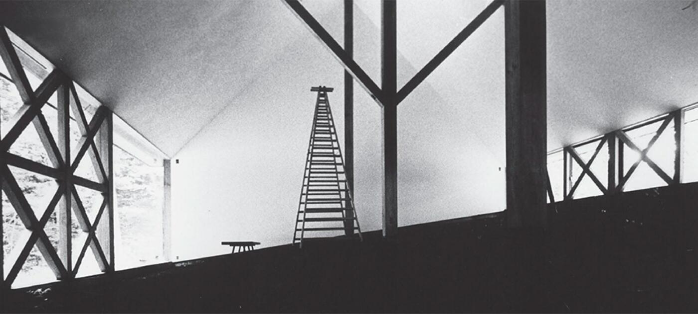
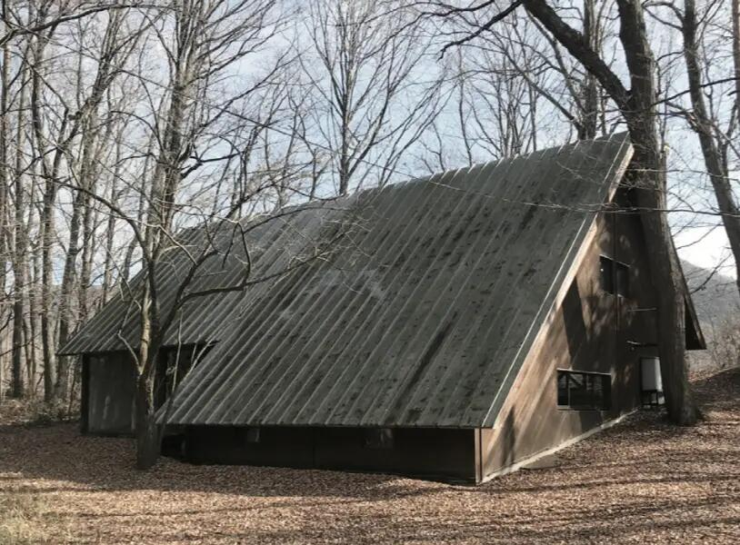
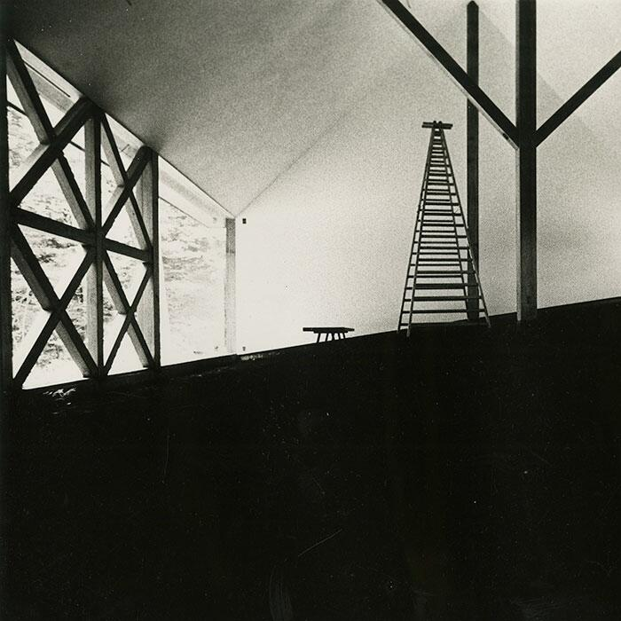
Nella House in White, Kazuo Shinohara afferma con radicalità la propria idea che “la casa è un’opera d’arte” e lo fa attraverso un dispositivo di estrema precisione: l’assonometria strutturale.
Qui l’assonometria non è un semplice modo per rappresentare la casa, ma un mezzo critico per verificare il carattere assoluto del sistema spaziale. La struttura diventa la matrice della forma: un telaio rigoroso e calibrato in cui ogni elemento è indispensabile e nulla è decorativo.
Il disegno assonometrico mostra come la casa sia concepita come un organismo autonomo, quasi matematico: un volume puro, controllato nelle proporzioni, in cui il sistema delle travi e dei pilastri stabilisce una tensione continua tra astrazione e domesticità. È un “campo strutturale” nel senso più radicale: un insieme coerente che non si compone per aggiunta, ma emerge dalla logica interna della costruzione.
L’assonometria permette di vedere ciò che la percezione spaziale rischia di nascondere: